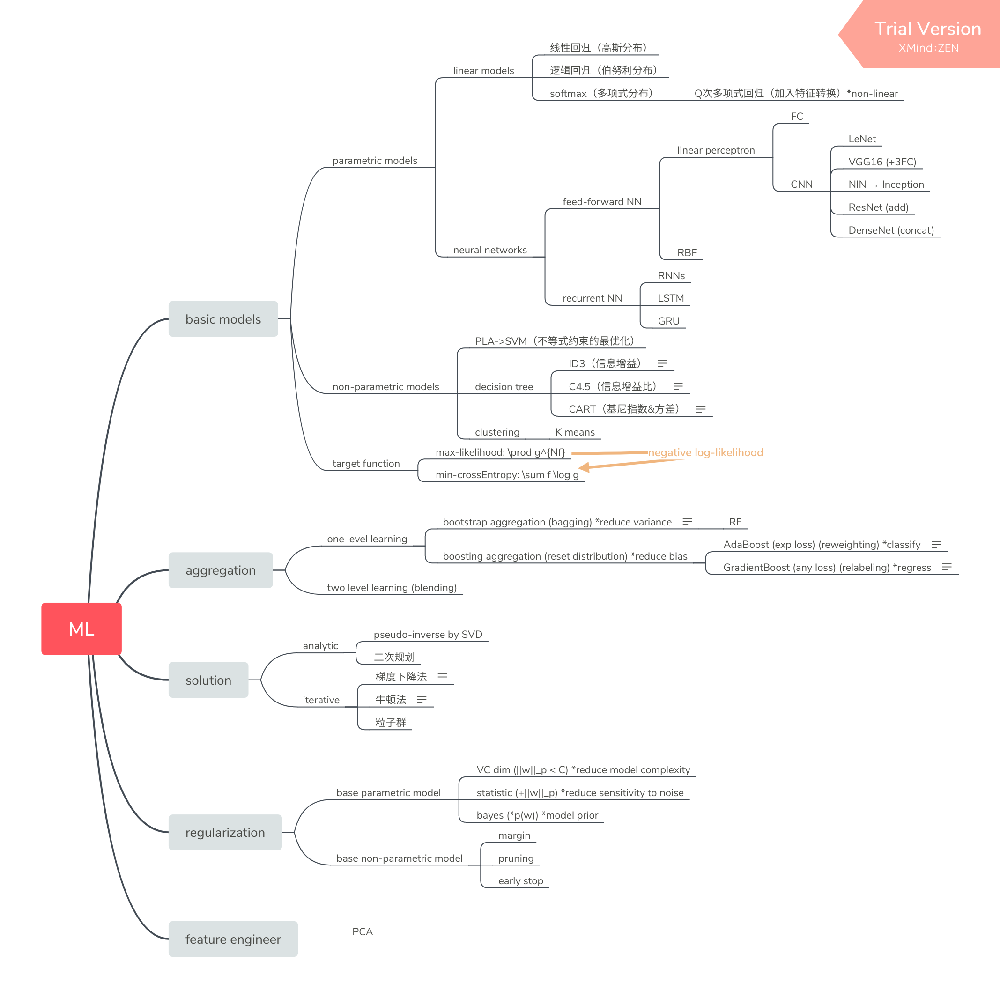
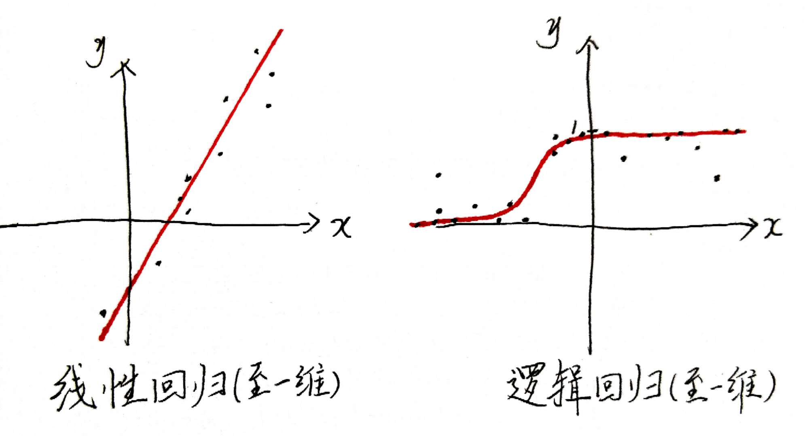
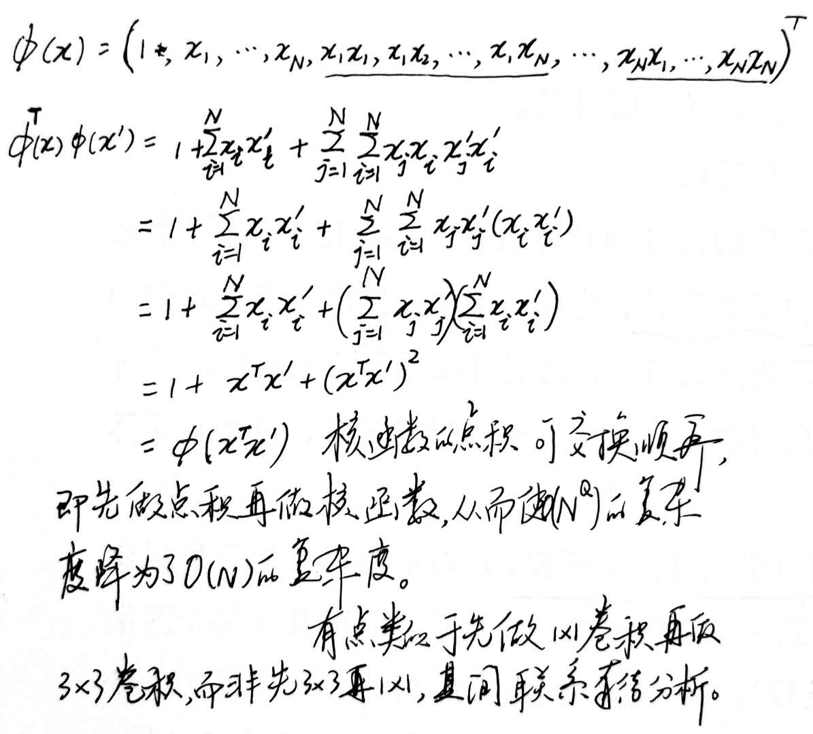
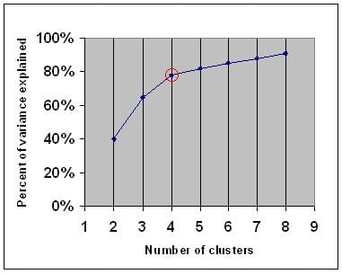
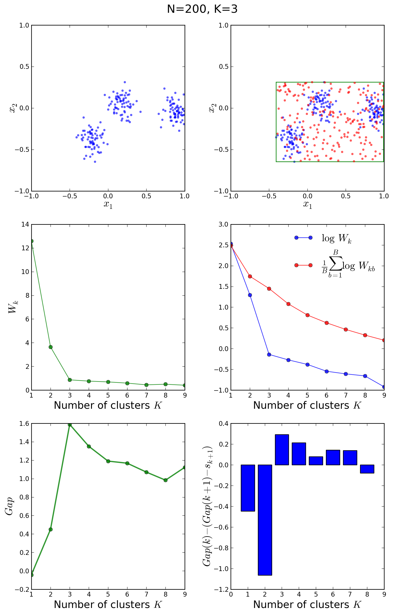
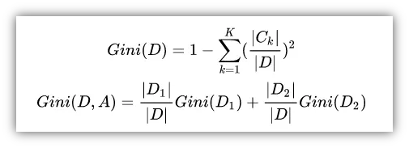
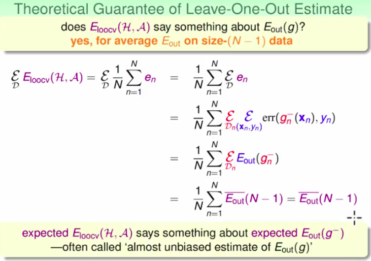

![]()
机器学习的可学习性


基础术语
| 名称 | 含义 |
|---|---|
| 模型 | 计算模型$\mathcal{A}$（学习法则）与数学模型$\mathcal{H}$（假设集）的合称为机器学习模型 |
| $E_{in}$ | 假设 h 在已得到的资料上与真实模式 f 的误差 |
| $E_{out}$ | 假设 h 在未见过的资料上与真实模式 f 的误差 |
| h | $\mathcal{A}$ 从假设集$\mathcal{H}$ 中取出的一个假设函数 |
| g | 机器学习模型最终确定的在当前任务中用于代替真实模式 f 的估计模式 |
若无特殊说明，一般模型一词特指数学模型$\mathcal{H}$ 。
前言
ML / DM / statistics
- ML 与 DM 很难区分
- ML 是利用资料计算出接近真实模式 f 的估计模式 g
- statistics 是利用资料推断一个尚不知结果的进程的结果的概率
应用场景
当任务存在某种潜在模式，但不能很容易地程式化地总结出来时。（前提是与该模式有关的资料是要能够获取到的）
分类
实现的可行性
模型与数据集大小两者之间没有先确定谁再确定谁的先后顺序：因为成本问题，数据集自然希望需要得越少越好，当数据量过小时便不可选复杂度过高的模型；而为使模型误差能够足够小，模型复杂度便须足够高，高复杂度的模型需要高样本复杂度的数据。总之，这是一个数据成本与模型误差博弈的过程。
VC（Vapnik-Chervonenkis）维
$d_{VC}$ 的含义：
- 模型自由参数的个数，或称为模型的自由度（向量$w$ 的维度）
- 模型的强度：表示模型什么时候还能够 shatter
注意：机器学习模型的 VC 维指数学模型的有效 VC 维，会根据计算模型变化（如加入不同的正则化项）而变化；常说的模型复杂度是指数学模型有效 VC 维对应的复杂度。
断点（breakpoint）
- shatter：若模型包含某次 N 个输入样本可能出现的所有情况（即模型能产生至少 $2^N$ 种假设），则称该输入能被该模型 $\mathcal{H}$ shatter
- 成长函数 $m_{\mathcal{H}}(N)$：模型能产生的最多（相同样本量不同样本的情况下，模型会产生不同的假设个数，此处为最多）的假设个数关于样本量的函数
- 断点 breakpoint：若N=k，成长函数首次不是指数级时，称 k 为最小断点
- VC 维：$d_{VC} = $（最小断点k ）- 1，即模型能 shatter 的最大样本数
当断点出现后，模型的成长函数便与模型的细节（线性分类器还是圆形分类器等细节）无关了：当 $N \geqslant k$ 时，$m_{\mathcal{H}}(N) \leqslant B(N,k)$ ，进而能得到 B(N, k) 的表格，由表格可推得 $B(N,k) \leqslant \sum^{k-1}_{i} C_N^i \leqslant N^{k-1}$ 。
模型复杂度
由霍夫丁不等式（给出了训练集误差无法代表整体误差的概率上限）：
$$
P{ |E_{in}(h) - E_{out}(h)|> \epsilon } \leqslant 2e^{-2 \epsilon^2 N}
$$
知，针对任意一个假设 h，只要取样容量 N 足够大，不好的取样发生的概率很小。
因为数据集的好坏应该是针对模型来说的，故只有下列式子足够小，才能说数据集是好的（从直观上来说数据集好是指手中的资料已经可以代表所有已知和未知的资料了）：
$$
P{ \exists h \epsilon \mathcal{H}, s.t. |E_{in}(h) - E_{out}(h)|> \epsilon } = P{\sum_{h \epsilon \mathcal{H}} [ |E_{in}(h) - E_{out}(h)|> \epsilon ] }
$$
设模型能产生的假设个数为$M$，由和事件的概率$ \leqslant$ 概率的和得到不好的取样发生的概率为：
$$
P{\sum_{h \epsilon \mathcal{H}} [ |E_{in}(h) - E_{out}(h)|> \epsilon ] } \leqslant 2 M e^{-2 \epsilon^2 N}
\
^{用E_{in}' 替代E_{out}}
{又{|E{in}-E_{in}'| > \epsilon / 2} \Leftrightarrow {|E_{in}-(E_{in}+E_{in}')/2| > \epsilon / 4} }
\Longrightarrow
\
\quad \quad \quad \quad \quad \quad \quad \quad \quad \quad \quad \quad \quad \quad \quad \quad \leqslant 4(2N)^{d_{VC}} e^{-\frac{1}{8} \epsilon^2 N}
\
\quad \quad \quad \quad \quad \quad \quad \quad \quad \quad \quad \quad \quad \quad \quad = \delta \quad (VC bound)
$$
由 VC bound得到：
$$
\epsilon = \sqrt{\frac{8}{N} \ln (\frac{4(2N)^{d_{VC}}}{\delta})}
$$
一般将该值记为$\Omega(N, \mathcal{H}, \delta)$ ，称为模型复杂度，它是样本复杂度、模型的 VC 维和 VC bound 的函数。故在置信度为$1-\delta$ 的情况下，泛化误差$|E_{in}-E_{out} | \leqslant \Omega(N, \mathcal{H}, \delta)$ 。模型复杂度本质是由多个因素影响（此处说的模型是数学模型即假设集，该模型的 VC 维决定了它能 shatter 的最大样本数，模型复杂度越高能够 shatter 的样本数越大；模型的 VC bound 决定了该模型结果【预测结果与泛化误差合称为模型结果】的不可信度，模型复杂度越高模型结果的不可信度越低；样本复杂度决定了针对该模型手中样本的好坏，模型复杂度越高手中样本变坏的可能性越大，另一种理解为样本复杂度决定了该模型能产生的假设个数，模型复杂度越高能产生的假设个数越多）的函数，而泛化误差本质是在一定置信度下的一个数，二者恰巧在数量上相等。
虽然给出预期的置信度、泛化误差和$d_{VC}$ 就能得到针对“模型能从样本中学到点什么东西”这件事模型所需的样本复杂度，但一般令$N \approx 10 d_{VC}$ 就足够了。
常见模型的 VC 维
举例：n 维的二分类感知机，VC 维为 n+1
- 当样本量 N=n+1 时，$X \epsilon R^{(n+1)*(n+1)}$ ，存在能够被该模型 shatter 的样本：令样本 X 可逆，则任意一种二分类情况 y 都可以被一个 w 划分出，因为 $w = X^{-1}y$ ；
- 当样本量 N=n+2 时，$X \epsilon R^{(n+2)*(n+1)}$ ，没有一个能够被该模型 shatter 的样本：因为 n+2 个样本中总有一个样本能被其它 n+1 个样本线性表示，设线性表示的系数为 $a_1, ... , a_{n+1}$ ，则模型无法产生 $(sign(a_1), ..., sign(a_{n+1}), -1)$ 这种二分类情况。
故VC 维为 n+1。
可行性分析
no free lunch 定理：若只坚持 f 是未知的，而不作出任何假设，那么在已知资料以外的部分去说我一定学到了什么东西（即找到了能够满足在已知资料以外的部分 $g \approx f$ 的$g$ ）这件事是做不到的。故机器学习的模型一般都是有某种归纳偏好的。
$$
\downarrow 对已知和未知资料作出假设：所有数据均是独立同分布的
$$若样本量够大，模型的 VC 维为有限值，则由霍夫丁不等式可认为样本内误差可以泛化到样本外误差，即 g 能够具有很好的泛化能力；又若计算模型能够从数学模型中找到使得样本内误差趋于零的假设 h 作为 g，则认为学习成功。
加入噪声后
噪声是指标签中的噪声，来源多为：
- 打标签过程人一时走神打错标签
- 打标签时不同的人有不同的标准
- 打标签的数据本身有噪声
对于含有噪声的标签，可以认为产生样本的数据源从真实模式 f(X) 变成了 P(y|X) ，即加入了些微抖动，但这只是一个变量的替换，并不影响 VC bound 的成立，故依然认为能够成功学习。
总结
机器学习能否成功，就考虑两件事：
- 数学模型复杂度是否足够高，以有能力使得训练集误差够小；
- 泛化误差（样本复杂度与模型 VC 维决定）是否足够低，以保证训练集误差能够代表整体误差。
至于学习速度便是计算模型去考虑的事情了。
在此可做个比拟：数学模型是天资，是人本身的智商，而计算模型是学习方法。方法用对了再加上高天资便能平步青云。
感知机
二分类感知机可简单理解为对输入向量线性组合取符号
线性可分问题中感知机的收敛性
| 符号 | 含义 |
|---|---|
| $w_{t}$ | 第 t 次错误修正后的权重向量 |
| $(x_t,y_t)$ | 第 t 次发现的错误样本点 |
| $w_f$ | 真实模式 f 对应的最佳权重向量 |
有所有样本中的最大长度为$R^2=\max_n||x_n||^2$，设$\rho=\min_n {y_n\frac{w_f^T}{||w_f}x_n}$，则
$$
w_f^Tw_{t+1}=w_f^T(w_t+y_{t+1}x_{t+1})=w_f^Tw_t+y_{t+1}w_f^Tx_{t+1}\geqslant w_f^Tw_t+\rho ||w_f||,
\
||w_{t+1}||^2=||w_t+y_{t+1}x_{t+1}||^2\leqslant ||w_t||^2+R^2.
$$
假设找到最佳权重向量需修正错误T次，则由以上两组迭代不等式和初始条件$w_0=0$得到
$$
w_f^Tw_T\geqslant T\rho ||w_f||,
\
||w_f^T||^2\leqslant TR^2.
$$
进而有
$$
(\frac{w_f^T}{||w_f||}\frac{w_T}{||w_T||})^2\geqslant TC \quad 其中C=\frac{\rho^2}{R^2},为一常量.
$$
故$T\leqslant \frac{R^2}{\rho^2}$，即对于有限样本的线性可分问题，PLA 收敛。
感知机的学习法则
所谓学习法则，就是权值更新的策略，即在迭代过程中如何进行权值更新。
- 感知器法则：依照知错就改的演算策略寻找最佳的权重向量（学习到的是各个特征的权重），但若样本线性不可分则不能收敛；
- $\Delta$法则：用最小二乘法、牛顿迭代法或梯度下降法等最优化方法寻找最小的输出误差（无法说清学习到的是什么，只是冲着最优结果去的），但对于误差曲面被拉长的情况进行学习较为困难。
感知机的局限
感知机模式识别只学习特征权重，特征探测器需要手写，即特征需人工提取，故较依赖于人工提取特征的好坏，而该能力较依赖工作者特殊领域的专业经验。由此，发展出了第二代神经网络，即加入了隐藏层，从而实现了特征检测模块的训练，即不但学习特征权重还可以学习特征表示。
【注】学习流入 hidden units 的 weight 其实就是学习feature。对于如何表达概念目前有三种观点：
- 特征论：概念由一系列特征表示，便于解释概念之间的相似性、便于将概念表示为向量；
- 结构主义论：概念不是孤立的，是关系图谱中的一个节点，由与其它概念的关系决定；
- 神经网络利用特征向量构成关系图谱：许多神经元表达一个概念，一个神经元同时参与很多个概念的表示，这种多对多的表示被称为“distributed representation”。
广义线性模型
线性模型
线性回归
所有变量的可表示的数量上的减少、衰退 regress，称为回归，即确认独立变量的过程。比如，独立变量和其他非独立变量之间的关系近似于线性时称为线性回归。
回归是一种降维方法，减少的维度为非独立变量个数。
线性回归模型
输入空间映射到整个实数区间
$$
\min_w ||Xw-y||
$$
最小二乘 VS 正交投影
最小二乘法与正交投影变换是对同一个问题两种不同等价形式的解决方法，且为相同的结果：
同一个问题：对一堆点求其回归方程，即
$$
\min_w ||Xw - y ||
$$
该问题的两种等价形式为
- 线性方程组$Xw=y$ 的近似解
- 最小二乘问题$x^*=\min_w (Xw-y)^T(Xw-y)$
对于第一个等价形式，X 的列向量的线性组合无法得到 y，那么将 y 正交投影至 X 的列空间，便可得到线性方程组的一种近似解：
$$
Xw=X(X^TX)^{-1}X^T y \Rightarrow w = (X^TX)^{-1}X^T y
$$
对于第二个等价形式，可用导数零点解决该无约束最优化问题：$\frac{\partial (Xw-y)^T(Xw-y)}{\partial w}=2X^T(Xw-y)=0 \Rightarrow w=(X^TX)^{-1}X^T y$ 。
更进一步：
- 若$X^TX$不是满秩矩阵，即$X$非列满秩，则最小二乘法与正交投影变换都失效了，此时$w$自由度为$n-rank(X^TX)$，常用的一个解是加入一个归纳偏好$\min ||w||_2$：将$X$进行奇异值分解进而求得伪逆，从而得到$w$：$X^+ = V \Sigma^{-1} U^T,\quad where \quad X=U \Sigma V^T$。
- 通常$X^TX$是可逆的，因为样本数$\gg$ 特征维度+1。但实践中常因为数值稳定性用$X^+$代替$(X^TX)^{-1}X^T$。
- 如果输入矩阵X中存在线性相关或者近似线性相关的列，那么输入矩阵 X 就会变成或者近似变成奇异矩阵（singular matrix）。这是一种病态矩阵，矩阵中任何一个元素发生一点变动，整个矩阵的行列式的值和逆矩阵都会发生巨大变化。这将导致最小二乘法对观测数据的随机误差极为敏感，进而使得最后的线性模型产生非常大的方差，这个在数学上称为多重共线性（multicollinearity）。在实际数据中，变量之间的多重共线性是一个非常普遍的现象。
对数几率回归（逻辑回归）
几率（odds）：（样本作为正例的可能性 / 反例的可能性，即$\frac{y}{1-y}$）正例的赔率，反映了样本作为正例的相对可能性。
对数几率回归模型
输入空间映射到 [0, 1] 区间
$$
\min_w ||Xw- \ln \frac{y}{1-y}||
$$
在形式上仍是线性回归，是对线性回归模型的扩展，即令模型逼近$y$的衍生物，这里的对数几率函数起到了将线性回归模型的预测值与真实标记联系起来的作用，称之为联系函数。当考虑其使用时称之为逻辑回归模型$\frac{1}{1+e^{-Xw}}$。
局部加权线性回归（LWR）
解决对不规则函数进行回归时容易出现的欠拟合与过拟合问题
其流程是，每次预测时都需要调用所有的样本$X$，结合预测点来拟合回归曲线。
其原理是，选择与预测点$x^*$相近的点来做线性回归，忽略远处的点对预测的影响。
其实现方式是加权最小二乘：
$$
\min_w ||\lambda (Xw - y)||
\
s.t. \quad \lambda_{i} = e^{-||x_i - x^*||_2^2}
$$
缺点：对于每一个要预测的点，都要重新依据整个数据集计算一个线性回归模型出来，使得算法代价极高。
线性判别分析（LDA）
待加
广义线性模型
大多数的概率分布都能表示成指数分布族的形式，如高斯分布，对噪声和不确定性进行建模；伯努利分布，对有两个离散结果的事件建模；多项式分布（Multinomial），对有K个离散结果的事件建模；泊松分布（Poisson），对计数过程进行建模，如网站访问量的计数问题；指数分布（Exponential），对有间隔的证书进行建模，如预测公交车的到站时间的问题；等等。通过进一步的推导，就能得到各自的线性模型，这大大扩展了线性模型可解决问题的范围。
广义线性模型：用某种指数分布去逼近数据真实分布的广义线性回归。
$$
P(y; \eta)=be^{\eta^T T(y) - a}
$$
GLM 的三个假设：
- $p(y | x; w ) \sim be^{\eta^T T(y) - a}$ ：y 基于 x 的条件概率服从指数分布族中以$\eta$为参数的某个分布；
- 学习的目标是预测 T(y) 基于 x 的条件期望，因为 T(y) 通常为 y，即目标函数为$E(y∣x; w)$，故线性模型的本质是让某个指数分布的期望去逼近 y；
- $\eta$ 和 x 的关联是线性的，即$\eta = w^T x$，从而
linear regression
线性函数是高斯分布的期望 $u$ 在线性回归模型上的表现形式，即在噪声影响下最可能的值。
因为$u$ 在实数区间取值，故应用于回归。
$$
\sigma = z
$$
高斯分布：
$$
p(y;u) = \frac{1}{\sqrt{2 \pi} \sigma}e^{- \frac{(y-u)^2}{2 \sigma^2}}
\
= \frac{1}{\sqrt{2 \pi} \sigma} e^{-\frac{1}{2}y^2} e^{uy - \frac{1}{2}u^2}
$$
将高斯分布与广义线性模型对比得到：
$$
\eta = u \Rightarrow u = \eta
$$
从而得到线性回归的数学模型（假设集）。
sigmod
logistic 函数是伯努利分布的期望 $\phi$ 在线性回归模型上的表现形式，即单次正例事件发生的概率；或说是伯努利分布体现在线性回归模型上的函数。
因$\phi$在 (0, 1) 区间取值，故应用于分类。

$$
logisticfunction \quad \sigma = \frac{1}{1+e^{- z}}
$$
伯努利分布：
$$
p(y; \phi) = \phi^y (1-\phi)^{N-y}
\
\quad \quad \quad \quad \quad = e^{(\ln \frac{\phi}{1-\phi})y + \ln (1-\phi)^N}
$$
当只针对一个样本来看时，伯努利分布便降为 0 / 1 分布；当针对整体来看时，y 便是正例发生的次数统计，目标函数为$sum( \phi)$ 。
将伯努利分布与广义线性模型对比得到：
$$
\eta = \ln \frac{\phi}{1- \phi} \Rightarrow \phi = \frac{1}{1+e^{- \eta}}
$$
从而得到逻辑回归的数学模型（假设集）。
softmax
softmax 函数是多项式分布的期望$\phi_i$在线性回归模型上的表现形式，即某类事件发生的概率。
因$\phi_i$在 (0, 1) 区间取值，故应用于分类。
$$
softmaxfunction \quad \sigma = \frac{e^{z_i}}{\sum_{j=i}^{k} e^{z_j}}
$$

上述的伯努利分布与多项式分布均是针对一个样本来说的。
回归用于分类
其本质仍是回归，只是在最后一步做了处理以用于分类，
总结
线性模型的思想是用某种指数分布去逼近数据真实分布，从而实现某种预测；其实现方法是让某个指数分布的期望去逼近 y，然后用最小二乘或最大似然之类的方法构建模型。
任务的不同类型是依据期望的取值空间划分的。
Q 次多项式回归
线性不可分数据可能圆形可分，或者其他二次曲线可分，甚至更一般化 Q 次曲线可分，由此引出 Q 次多项式回归的想法。
Q 次多项式特征转换
人工提取特征的过程可认为是某种特征转换，此处提出的是一般化的 Q 次多项式特征转换。
$$
z = \phi (x) = (1, x_1, x_2, x_1^2, x_2^2, x_1 x_2)
$$
对于线性不可分的 X 可经过 Q 次多项式特征转换$\phi$（下文简称为特征转换）变为线性可分的 z。该过程可细述为：
特征转换$\phi$将 d+1 维的 X 空间转换为 $C_{d+Q}^Q$维的 Z 空间，其中 $C_{d+Q}^Q = O(d^Q)$ ；VC 维也由 d+1 变为了 $C_{d+Q}^Q$，模型复杂度呈指数级增长，记为$\mathcal{H}_1$升级为了$\mathcal{H}_Q$，其关系为$\mathcal{H}_1 \subset \mathcal{H}_2 \subset ... \subset \mathcal{H}_Q$。
legendre polynomials：正交化的特征转换。避免同数量级的 x 经普通的特征转换后在不同特征下存在好几个数量级的差距，如 $x$与$x^{10}$，从而使得在特征转换后 w 仍能具有同等的影响力。
特征转换后的模型的 VC 维的推导
由公式
$$
C_n^m+C_n^{m-1} = C_{n+1}^m
$$
得转换后 x 的 Q 次项的项数为：
$$
C_d^Q+(Q-1)C_d^{Q-1}+...+C_d^1=C_{d+Q-1}^Q ,
$$
故，转换后 x 小于等于 Q 次项的项数为：
$$
C_{d+Q-1}^Q + C_{d+Q-2}^{Q-1}+...+C_{d+Q-Q}^1+C_{d-1}^0
\
=C_{d+Q-1}^Q + C_{d+Q-2}^{Q-1}+...+C_{d}^1+C_{d}^0
\
=C_{d+Q-1}^Q + C_{d+Q-2}^{Q-1}+...+C_{d+1}^1
\
=C_{d+Q-1}^Q + C_{d+Q-1}^{Q-1}
\
=C_{d+Q}^Q
$$
线性软间隔支撑向量机
详见支撑向量机
核模型
核函数
核脊回归（KRR）
常用 SVR 替代
核逻辑回归（KLR）
常用 probabilistic SVM 替代
支持向量机
SVM
解决的问题
解决了两个问题：
- 通过最大化 margin，解决 PLA 健壮性差的问题；
- 通过对偶问题的转换和核函数，解决了在引入特征转换解决线性不可分问题时导致的复杂度高的问题。
（附）软间隔：
由问题引出的两个核心点
margin 的表示形式
点到超平面的距离
两种表示形式：
- 几何间隔：常用于在欧式空间中做距离度量，通过取超平面一点指向所研究点的向量，将该向量与超平面的单位法向量做内积便得几何间隔
$$
margin = \frac{|w^Tx + b|}{||w||}
$$
- 函数间隔：常用于做正负判断，也可用于做与超平面距离远近的比较，通过将点的坐标直接带入函数得到；函数间隔本质是几何间隔乘以法向量的长度，即$||w||$。
$$
margin = |w^Tx + b|
$$
最大化 margin 得到的 prime SVM
首先假设数据 x 经特征转换后变为的 z 线性可分。
出于数学表达形式简便上的考虑，设 label 为 +1 和 -1，那么最大化 margin，便是最大化最小 margin，则优化问题为：
$$
\max_{w,b} { \frac{\min_z (label(w^Tz+b))}{||w||} }
$$
因为 margin 比较的是相对大小，出于便于优化（往二次规划靠拢）上的考虑，设 $\min(label(w^Tz+b))=1$ ，故优化问题化为：
$$
\max_{w,b} \frac{1}{||w||}
\
s.t. \quad label*(w^Tz+b) \ge 1
$$
由此，通过对函数间隔最小值的设定，将 margin 的大小化简为了法向量长度的倒数，即 $\frac{1}{||w||}$ 。
软间隔
当数据 x 经特征转换后变为的 z 线性不可分时，将越过margin的点做记录，并将越过的量计入损失函数中，至于是以函数间隔还是几何间隔的形式计入损失函数中，应衡量函数间隔计算上的便易性与几何间隔物理含义上的合理性。当采用几何间隔的形式计入损失函数中时，优化问题化为：
$$
\max \frac{1}{||w||} - C \sum \frac{\lambda_i}{||w||}
\
s.t. \quad {^{label_i * (w^T z_i + b) \ge 1 - \lambda_i}
_{ \lambda_i \ge 0}
$$
其中 C 是一超参数，该数越大，在优化时会越偏向于将所有点置于分界面之外。考虑到函数间隔也能体现错误点与分界面的远近，同时超参数的存在使得几何间隔确切的物理含义的意义不大，又考虑到优化的便易性，将优化问题化为：
$$
\min \frac{1}{2}||w||_2^2 + C \sum \eta_i
\
s.t. \quad {^{label_i * (w^T z_i + b) \ge 1 - \eta_i}
_{ \eta_i \ge 0}
$$
对偶问题的转换
由不等式约束的拉格朗日乘子法，得到等价的 KKT 条件下的拉格朗日对偶函数：
$$
\min_{w, b, \eta} \frac{1}{2}||w||2^2 +C \sum \eta_i + \sum \lambda_i^0 (1- \eta_i - label_i *(w^T z_i + b)) + \sum \lambda_i^1(-\eta_i)
\
s.t.
\
\quad \lambda_i^0 \ge 0
\
\quad 1- \eta_i - label_i *(w^T z_i + b) \le 0
\
\quad \lambda_i^0(1- \eta_i - label_i *(w^T z_i + b) ) = 0
\
\quad \lambda_i^1 \ge 0
\
\quad -\eta_i \le 0
\
\quad \lambda_i^1( -\eta_i ) = 0
$$
记拉格朗日函数为$L$，将拉格朗日函数对各变量的导数分别置零得：
$$
\frac{\partial L}{\partial w} = 0 \Rightarrow w = \sum\lambda_i^0 label_i z_i
\
\frac{\partial L}{\partial b} = 0 \Rightarrow \sum \lambda_i^0 label_i = 0
\
\frac{\partial L}{\partial \eta_i} = 0 \Rightarrow C - \lambda_i^0 - \lambda_i^1 = 0
$$
将三个结果带入最优化问题中，得拉格朗日对偶函数：
$$
L = -\frac{1}{2}||w||_2^2 + \sum \lambda_i^0
\
= -\frac{1}{2} \sum_i^m \sum_j^m \lambda_i^0 \lambda_j^0 label_i label_j (z_i z_j^T) + \sum \lambda_i^0 , \quad 0 \le \lambda_i^0 \le C.
$$
进而得到最终的对偶问题：
$$
\min{\lambda^0} \frac{1}{2} \sum_i^m \sum_j^m \lambda_i^0 \lambda_j^0 label_i label_j (z_i z_j^T) - \sum \lambda_i^0
\
s.t.
\
\quad 0 \le \lambda_i^0 \le C
\
\quad \sum \lambda_i^0 label_i = 0
$$
因采用高斯核函数，故
$$
z_iz^T_j = e^{-\frac{||x_i-x_j||^2}{2\sigma^2}}
$$
对偶变量的物理含义
在对偶问题的转换过程中可得到如下互补松弛条件：
$$
\lambda_i^0(1- \eta_i - label_i *(w^T z_i + b) ) = 0
\
(C - \lambda_i^0) \eta_i = 0
$$
由此可得（称 $\lambda_i^0$ 为对偶变量，称 $\eta_i$ 为越界变量）：
- 对于对偶变量等于0的点，为 non SV，越界变量等于零；
- 对于对偶变量大于0小于 C（越界惩罚系数）的点，为 free SV，越界变量等于零，这些点决定了 w 和 b；
- 对于对偶变量等于 C 的点，为 bounded SV，越界变量大于零；
核函数
当采用特征转换（如高次多项式）将数据从低维空间映射到高维空间时，会带来模型复杂度的指数级增长，而核函数会解决这个问题，即即使映射到高维空间，模型复杂度依然保持低维空间时的大小。一种观点是核函数是度量两个向量在某个高维空间中的距离的度量尺，不同高维空间对应不同的核函数。具体原理以二次多项式为例：

进而，原对偶问题化为：
$$
\min_{\lambda^0} \frac{1}{2} \sum_i^m \sum_j^m \lambda_i^0 \lambda_j^0 label_i label_j K(x_i x_j^T) - \sum \lambda_i^0
\
s.t.
\
\quad 0 \le \lambda_i^0 \le C
\
\quad \sum \lambda_i^0 label_i = 0
$$
故计算复杂度由原先的$O(m^d)$降为了$O(m)$，d 指特征变化到的高维空间的维度。
mercer's condition
核函数和映射（仿射矩阵）没有关系，核函数只是用来计算映射到高维空间之后的内积（度量阵）的一种简便方法。由此核函数可以使人们在不需要知道如何映射的情况下便能计算得内积，不过不是任何函数都可以作为核函数，因为有些函数并不存在那么一个内积结构与之对应。
一个成为核函数的充分但非必要条件（ mercer's condition ）：任何半正定的函数（所谓半正定的函数f(xi,xj)，是指拥有训练数据集合（x1,x2,...xn)，我们定义一个n * n的矩阵的元素$a_{i,j}$ = f(xi,xj)，如果这个矩阵是半正定的，那么f(xi,xj)就称为半正定的函数）都可以作为核函数。
二次规划
SMO
SVR
聚类
K-Means
k值选择方法
最佳聚类类别依赖对 intra- and inter- cluster similarity 的定义，以两点欧式距离为 similarity 为例，类$C$的类内(intra-)相似度则为类内任意两点距离之和，即：
$$
S_{C} = \sum_{x_i \epsilon C} \sum_{x_j \epsilon C} ||x_i-x_j||^2 = 2n_{C} \sum_{x_i \epsilon C} ||x_i-\mu_C||^2.
$$
将所有类的类内相似度加和并作标准化，得到该聚类的紧支度（compactness）：
$$
W_k = \sum_{k=1}^k \frac{S_k}{2n_k}.
$$
最佳聚类的表现应为类内相似度最大类间相似度最小，紧支度为类内相似度，而类间相似度k-means未做考虑（？为啥子嘛）。
肘部法（Elbow Method）
依据紧支度-类别图，主观判断最佳聚类类别。

Gap Statistic
在假设聚类数为k下，蒙特卡洛法生成N个数据点（常用均匀分布）（N为真实数据个数），得到k-means结果后，计算参考数据ref和真实数据org的紧支度，并求得gap；gap最大对应的k为最优k值。其中gap = np.log(np.mean(ref_inertia_))-np.log(org_inertia_)。计算过程可视化如下图所示：

集成学习
名词定义
| 名词 | 含义 |
|---|---|
| 学习器 | 学习算法，即$\cal{A} + \cal{H}$ |
| 模型 | 由学习器和数据集学习得到的解，记为 g |
| 真实模式 | 数据集服从的真实分布，记为 f |
分类
- 选用在验证集上表现最好的模型；
- 给每个模型赋予各自的权重系数：$sign(\sum_t \alpha_t g_t (x))$ ；
- 给每个模型赋予的权重系数依赖输入变化而变化：$sign(\sum_t q_t (x) g_t (x))$ ；
理论依据
若能证明基于各子模型赋予相同的权重系数得到的 G 的表现比各子模型（可由不同学习器同批数据得到，也可由同一学习器不同批数据得到，当然这些数据应是独立同分布）的平均表现更好，那么集成学习的类别2、3便可认为是更强的学习器：
设 $G = \frac{1}{T} \sum_t g_t$ ，真实模式为 f ，则
$$
\begin{align}
avg[ (g_t - f)^2 ] &= avg(g_t^2 - 2g_t f + f^2) \
&= avg(g_t^2) - 2Gf + f^2 \
&=avg(g_t^2) - G^2 + (G-f)^2 \
&= avg(g_t^2 - 2G^2 + G^2) + (G-f)^2 \
&= avg(g_t^2 - 2g_t G + G^2) + (G-f)^2 \
&= avg[(g_t - G)^2] + (G-f)^2
\end{align}
$$
由此各子模型的平均泛化误差必比 G 大，得证。
blending
当各子模型由不同学习器同批数据得到，称集成学习为 blending 。
因各子模型的权重需要再在验证集上学习才能得到，故称为 two-level learning 。
linear blending
先由训练集和不同的学习器得到各自的 $g_i, (i=1, 2, ..., M)$ ，设 $z=( g_1(x), g_2(x), ..., g_M(x))$ ，再由验证集和线性学习器 $Lin({z_n, y_n})$ 得到解析解 $\alpha$ ，于是 $G = \alpha^T z$ 。
any blending（stacking）
先由训练集和不同的学习器得到各自的 $g_i, (i=1, 2, ..., M)$ ，设 $z=( g_1(x), g_2(x), ..., g_M(x))$ ，再由验证集和任意学习器 $Any({z_n, y_n})$ 求得解，于是 $G = q(z)$ 。
boosting
当各子模型由同一个学习器不同批数据得到，称集成学习为 boosting 。
偏差-方差分解
偏差-方差分解是对学习器的期望泛化误差进行物理含义上的拆解，以理解学习任务内在的误差决定因素。
设有 T 批独立同分布的数据 $D_t, (t = 1, 2, ..., T)$ ，同一个学习器会在不同批的数据下产生不同的模型，即 $\cal{A} (D_t) = g_t$ 。
设 $\bar{g} = \lim_{T \to \inf} \frac{1}{T} \sum_{t=1}^T g_t$ ，那么学习器的期望预测为 $\bar{g} (x)$ 。
于是学习器的期望泛化误差为
$$
avg(E_{out} (g_t)) = avg((g_t - \bar{g})^2) + E_{out} (\bar{g}).
$$
也就是说，泛化误差可以分解为方差与偏差之和：偏差 $E_{out} (\bar{g})$ 度量了学习器的期望预测与真实结果的偏离程度，即学习器本身的拟合能力；方差 $avg((g_t - \bar{g})^2) $ 度量了不同批数据所导致的学习性能的变化，即数据扰动对学习器的影响。
当训练不足时，学习器的拟合能力不够强，数据扰动的影响不大，此时偏差 $E_{out} (\bar{g})$ 主导了泛化误差，偏差越大表明学习器越难以学到数据的真实模式；随训练程度加深，学习器的拟合程度越来越高，数据扰动渐渐能够被学习器学到，此时方差 $avg((g_t - \bar{g})^2) $ 主导了泛化误差，方差越大表明学习器越易发生过拟合。决策树的层数、神经网络的训练轮数、集成学习的基学习器个数都是用于控制训练程度的。
bagging
bootstrap aggregation; uniform aggregation.
降低方差
若基学习器对数据的随机性很敏感，那么 bagging 会工作得很不错，因为它会降低学习器的方差。可以看做是一种正则化的处理。
bagging 得到的是更中庸的 G，而 blending 得到的是更强的 G。
bagging 的 bootstrap 操作是通过给各样本赋不同权重实现的，而非真的模拟有放回的取样。
使用 bootstrap 的模型（ bagging/RF ）均可用OOB来做验证，这称为 self-validation（与cross-validation相对）。
AdaBoost（adaptive boosting）
linear aggregation.
降低偏差
bagging 可看作是对每个样本赋不同的权重（即不同的惩罚系数），由这一思想延伸，设法通过 re-weighting 使得每次得到的 $g_t$ 差别都很大，进而使得中庸的 $G$ 更强。
其实现方法为：初始设置权重均为$\frac{1}{N}$，设置本次为每个样本赋的权重$u_{t+1}$，使得上次的 $g_t$ 表现很差（即准确率为 0.5）:
$$
\frac{\sum_i u_{t+1}^i [g_t(x_i) \ne y_i]}{\sum_i u_{t+1}^i} = \frac{1}{2}
$$
推得：
$$
\sum_i u_{t+1}^i [g_t(x_i) \ne y_i] = \sum_i u_{t+1}^i [g_t(x_i) = y_i]
$$
将权重看做每个样本的概率分布，那么样本$i$的个数为$N * u_t^i$，错误率$\epsilon_t$为上次分错的样本个数占总数$N$的比例，故：
$$
N * \sum_i u_t^i [g_t(x_i) \ne y_i] = N * \epsilon_t \
N * \sum_i u_t^i [g_t(x_i) = y_i] = N * (1-\epsilon_t)
$$
由此可令（等式右边均为上次分错个数乘以分对个数，故自然相等）：
$$
{^{u_{t+1}^F = u_t^F (1- \epsilon_t)}
{u{t+1}^T = \epsilon_t u_t^T} ,
$$
或（为了后续权重$\alpha_t$推导形式简洁）
$$
{^{u_{t+1}^F = u_t^F * \Delta_t}
{u{t+1}^T = u_t^T / \Delta_t} , \Delta_t = \sqrt{\frac{1- \epsilon_t}{\epsilon_t}} .
$$
其中 $u_t^F$ 为上次犯错的样本的权重，$\epsilon_t$ 为上次的错误率。上述更新权重的等式可只用一个等式来实现：
$$
u_{t+1}^i = u_t^i \Delta_t^{-yg_t(x_i)}
$$
其本质是把上次分错的样本加大错误惩罚力度，把上次分对的样本减小错误惩罚力度，从而得到不一样的 $g_t$ ，综合后便能得到很强的 G 。
综合时与 blending 不同，采用 aggregation on the fly 策略（这也是称为 boosting 的原因）：在得到每一个 $g_t$ 的同时得到其对应的权重 $\alpha_t$ ，最终
$$
G(x) = sign ( \sum_t \alpha_t g_t(x)).
$$
当采用指数误差度量作为loss时， $\alpha_t = \ln \sqrt{\frac{1- \epsilon_t}{\epsilon_t}}$ （导数置0推得）。这便是AdaBoost，无需额外计算便可直接得到各弱学习器的blending系数。此时更新权重的递推式可进一步用$\alpha_t$来表示：
$$
u_{t+1}^i = u_t^ie^{-y \alpha_t g_t(x_i)}
$$
进而得到：
$$
u_{T+1}^i = u_1^i \prod_{t=1}^T e^{-y \alpha_t g_t(x_i)} \
= u_1^i e^{-y \sum_{t=1}^T\alpha_t g_t(x_i)} \
= u_1^i e^{-y G_T(x_i)} \
= \frac{1}{N} e^{-y G_T(x_i)}
$$
其中$e^{-y G_T(x_i)}$可认为是模型$G_T$在$x_i$上的指数误差度量的loss，由此模型在整个数据集上的loss可表示为$\sum_i u_{T+1}^i$，即$G_T$的损失函数转化为了$\sum_i u_{T+1}^i$，也就是集成模型$G_t$的目标函数为最小化下一次的样本权重和，具体是通过不断地加入新的弱学习器$g_t$实现的。从而在已有的$G_{T-1}$下，继续加入$g_T$得到的$G_T$对应的loss为：
$$
loss_{+g_T} = \sum_i u_{T+1}^i \
= \sum_i u_T^i e^{-y \alpha_T g_T(x_i)} \
= \sum_i u_T^i (1 -y \alpha_T g_T(x_i))\
= \sum_i u_T^i + \alpha_T \sum_i (-yg_T(x_i))u_T^i
$$
其中，本次的样本权重和$\sum_i u_T^i$为未加入$g_T$时集成模型的loss。
GradientBoost
将AdaBoost损失函数的形式
$$
\min \sum_i u_{T+1}^i \
= \min \frac{1}{N} \sum_i e^{-y G_T(x_i)} \
= \min \frac{1}{N} \sum_i expLoss(y, G_T(x_i))
$$
中的指数误差度量换为任一误差度量（因为直接替换了损失函数，所以需要从头开始就替换，即不能再用样本权重和做中间过程的损失函数了）：
$$
\min \frac{1}{N} \sum_i err(y, G_T(x_i)) \
= \min \frac{1}{N} \sum_i err(y, G_{T-1}(x_i)+\alpha_T g_T(x_i)) \
\approx \min \frac{1}{N} \sum_i [err(y, G_{T-1}(x_i)) + \alpha_T g_T(x_i) \frac{\partial err}{\partial G}|{G=G{T-1}(x_i)}] \
= \min \frac{||err(y, G_{T-1}(X)) + \alpha_T (g_T(X))^T \frac{\partial err}{\partial G}|{G=G{T-1}(X)}||2}{N}
$$
要让该损失函数最小，须令$g_T(X)$处于函数$err$在点$G{T-1}(X)$的负梯度方向，为保证各方向能同时达到最低点，令弱学习器$g_T$的目标函数为:
$$
\min \sum_i g_T(x_i) - (-\frac{\partial err}{\partial G} |{G=G{T-1}(x_i)})
$$
而 $\alpha_T$ 为fixed learning rate。因为新加入的弱学习器学到的是原先模型的负梯度，故称之为梯度提升。注意AdaBoost与GradientBoost不同，AdaBoost是通过提升错分数据点的权重来定位模型的不足，而GradientBoost是通过算梯度来定位模型的不足，即AdaBoost从广度来降低偏差，而GradientBoost从深度来降低偏差。
以平方误差函数为误差度量做回归任务举例：
$$
err(y, y') = \frac{1}{2}(y' - y)^2 \
\frac{\partial err}{\partial y'} = (y' - y)
$$
从而得到弱学习器$g_t$的目标函数：
$$
\min \sum_i g_t(x_i) - (y-G_{t-1}(x_i))
$$
最终得到：
$$
G_T(x) = \sum_t \alpha_t g_t(x)
$$
其中$\alpha_t$为预先设定的学习率。
决策树
决策树：从训练集中归纳出一组嵌套分类规则，或者说是从训练集中估计出条件概率模型。
归纳嵌套分类规则的操作：在划分数据集之前之后信息发生的变化成为信息增益，知道如何计算信息增益（类别分布的熵减去已知某特征值后类别分布的条件熵，即类别与某特征的互信息），我们就可以计算每个特征值划分数据集获得的信息增益，获得信息增益最高的特征就是当前最好的选择。
决策树的生成：ID3算法：在决策树各个结点上对应信息增益准则选择特征，递归地构建决策树。C4.5算法：将信息增益比（互信息除以所选特征分布的熵）作为选择特征的标准。CART（C&RT)算法： 使用 Gini 指数作为选择特征的准则。
- ID3算法：因依据特征所有可能的取值来生成树，故仅仅能够处理离散属性。
- C4.5算法：用信息增益比克服了信息增益准则偏向于选择取值较多的特征的问题；通过先将特征取值排序，以连续两个值中间值作为划分标准的方法解决了决策树不能处理连续特征的问题。
- CART算法：特征a有连续值m个，从小到大排列。m个数值就有m-1个切分点，分别使用每个切分点把连续数值离散划分成两类，将节点数据集按照划分点分为D1和D2子集，然后计算每个划分点下对应的基尼指数，对比所有基尼指数，选择值最小的一个作为最终的特征划分。特征值连续和离散有各自的处理方法，不应该混淆使用。比如分类0,1,2只代表标签含义，如果进行加减的运算或者求平均则没有任何意义。因此，CART分类树会根据特征类型选择不同的划分方法，并且与C4.5不同是，它永远只有两个分支。

另外，当CART算法用于回归时（比如在GBDT中），使用方差作为划分标准，具体为：
- 首先将根节点的标签设置为所有标签的均值；
- 选择一个切分点（CART规定生成二叉树），遍历所有特征，选择两子节点对应数据标签的方差和最小的切分点，然后将各子节点对应数据的标签均值设为各子节点的标签；
- 重复第二步，并在预设的停止条件下结束树的生成。
优点：
- https://blog.csdn.net/zpalyq110/article/details/79527653非线性；
- 非参数模型（参数模型是指参数个数与数据无关的模型；参数模型一般结构比较简单，只需要估计少量的参数，因为在对参数进行估计前，参数模型就已经对概率分布有了很强的假设，比如线性回归就假设了残差的正态性。非参数模型是指参数个数由数据决定的模型；非参数模型一般无需对数据的概率分布做先验假设，比如k最近邻模型、k Means、决策树、随机森林、SVM）；
- 可处理缺失值、不同量纲值；
- 可解释性强；
缺点：
- 每次划分只能考虑一个变量，无法考虑变量之间的相关性，故准确率比较依赖喂的特征；
- 容易过拟合，故需要做预剪枝和后剪枝；
- 划分子树为贪婪算法，很可能找的不是最优树；
不纯度的设计
在分清特征$Feat^C$的条件下类别分布$D^{cluster}$的条件熵（含义为分清该特征后还需多少信息才能分清类别）为：
$$
H(D^{cluster}|Feat^C) = \sum_{I=1}^{Num-Feat^C} p_{Feat^C_I} H(D^{cluster}{Feat_I^C})
$$
从而得到该特征对类别分布的信息增益（info-Gain），即该特征分布与类别分布互信息：
$$
I(D^{cluster}, Feat^C) = H(D^{cluster}) - H(D^{cluster}|Feat^C)
$$
这便是ID3划分子树的判别标准。但当数据集不充足时，客观存在的大数定律会导致对概率的估计结果$p{Feat^C_I}$的方差很大，进而导致可能的取值个数多的特征对应的条件熵偏小（比如极限情况：可能的取值个数等于样本个数，且可能的取值每一个均取一个，最终得到的条件熵为0，即信息增益为类别分布的熵的全部），进而误选了非当前最优的特征，进而错误地训练出一个宽而浅的树，由此引入C4.5的判别标准——信息增益率（Gain-ratio），即将信息增益（理解时，从条件熵出发来理解，从极限情况出发）除以特征分布的熵：
$$
GainRatio(D^{cluster}, Feat^C) = \frac{I(D^{cluster}, Feat^C)}{H(Feat^C)}
$$
缺失值处理
- 如何在属性值缺失的情况下进行划分属性（特征）选择：基于无缺失值的所有样本子集计算信息增益，然后乘以无缺失值样本占总样本的比例。因这一层的生成无法对有缺失值的样本进行分类（最终划入了所有节点），所以该特征贡献的信息增益应再乘上一个系数，即无缺失值样本占总样本的比例。
- 给定了划分属性，若样本在该属性上的值缺失，如何对样本进行划分：将该样本划入所有节点，但需乘以不同权重（权重用于计算信息增益，也可理解为bootstrap中的样本权重的含义)；各样本初始权重均为1），权重为各子节点样本数占无缺失值样本总数的比例。
剪枝
剪枝分为预剪枝、后剪枝两种。
预剪枝（正则化）
预剪枝是指在完全正确分类之前，决策树会较早地停止树的生长。分为通用的停止和更严格的停止。
通用的停止，通用的停止其实就是前面递归生成示例中的终止判定条件：
- 如果所有样本均属同一类，终止递归。
- 如果样本的所有的特征值都相同，终止递归。
更严格的停止：
- 如果树到达一定高度
- 如果节点下包含的样本点小于指定的阈值
- 如果样本的类分布是独立于可用特征的（使用卡方检验）
- 如果扩展当前节点不会改善信息增益（验证集），即信息增益小于指定的阈值
后剪枝（模型压缩）
常用的后剪枝策略包括:
- 降低错误剪枝 REP
- 悲观错误剪枝 PEP
- 基于错误剪枝 EBP
- 代价-复杂度剪枝 CCP
- 最小错误剪枝 MEP
随机森林
尽管有了剪枝等方法，依然无法解决泛化能力弱的缺点，由此引入了集成学习，于是有了随机森林、GBDT等。
随机森林的构建过程：
- 样本的随机：从样本集中用Bootstrap随机选取n个样本；
- 特征的随机：从所有属性中随机选取K个属性，选择最佳分割属性作为节点建立CART决策树（泛化的理解，这里面也可以是其他类型的分类器，比如SVM、Logistics）；
- 重复以上两步m次，即建立了m棵CART决策树；
- 这m个CART形成随机森林，通过投票表决结果，决定数据属于哪一类（投票机制有一票否决制、少数服从多数、加权多数）；
超参有：随机选取的属性个数K，每棵树的最大深度，棵树m
特征选择
对于线性模型来说，直接比较权重大小便可得到特征重要性的排序。
对于非线性模型来说，常用的方法为 permutation test，即在同一训练集上训练并测试得到该模型的表现$performance(D)$，然后将待测试特征$Feat^C$随机打乱重排，重新在该训练集上训练并测试得到$performance(D^{Feat^C})$，最终得到该特征的重要性为$|performance(D) - performance(D^{Feat^C})|$。当然，如果训练集足够分成两部分，一部分用于训练，另一部分用于特征选择，那么只训一次也是可以的，不过大多数时候数据集是十分昂贵的。因为随机森林可以做 self-validation，故常用随机森林来做非线性模型的特征重要性排序。
GBDT
Gradient Boosting with CART.
特征工程
PERSPECT：好的特征能降低建模的难度。
简单数字的花式技巧
特征空间与数据空间:
特征（如，每个人喜欢的一个歌单）是在特征空间中的一个向量，一个人可由特征空间中的向量表示出来；而针对某首特定的歌，每一个人对其喜爱程度构成一个维度，所有的维度构成数据空间，一首歌可由数据空间中的向量表示出来。若将一个人的所有特征并成一条向量作为矩阵的行向量，那么该矩阵（称为数据矩阵）的列向量空间便是特征空间，行向量空间是数据空间。
- scale
- 基于输入数据的光滑函数的模型（如K-means聚类，线性函数，最近邻，REB核等）对输入数据的尺度很敏感，故通常将输入数据进行归一化，以使得输出数据在统一的尺度上。
- distribution
- 有些模型对输入数据的分布有一定要求，如线性回归模型要求预测误差服从高斯分布，通常这一要求是无需考虑的，但当输出值跨越好几个量级时，这一要求便无法满足，须将输出值取对数（log 转换，一种量级转换），这可使得预测误差更接近高斯分布（准确说，这属于 target engineering）。比如，在 Faster-R-CNN 中的目标框回归中对尺度因子的预测，将尺度因子取对数作为回归量。
当某维的特征没有边界时（scale）
feature scaling 无法改变特征的分布，只能够改变特征的范围（range）。
min-max scaling
$$
x^* = \frac{x - min(x)}{max(x) - min(x)}
$$
scaled feature 的范围为 (0, 1)。
variance scaling（standardization）
$$
x^* = \frac{x- mean(x)}{var(x)}
$$
scaled feature 的均值为0，方差为1，而其范围视情况而定，不是固定数值。
L-2 normalization
$$
x* = \frac{x}{||x||_2}
$$
当某维特征的量级跨越过多时（distribution）
当某维特征的量级跨越过多时，很多模型可能会出问题。如在线性模型中，因为线性系数被期望可以接受所有可能的输入值，故当某维特征的量级跨越过多时，该维特征会在不知情的情况下被偏向成为重要性远高于其他特征的主要特征，换句话说其他特征会被自动忽略掉。
最简单暴力的解决方法为 quantization / binning，如将少年年龄映射为1，青年年龄映射为2，中年年龄映射为3，老年年龄映射为4；或者将个位数映射为1，十位数映射为2，百位数映射为3，千位数映射为4，等等。
log transform
有个常用的连续的映射，log 转换 $data_{transformed} = \log (data_{raw} + 1)$ ：它的作用是压缩大数（大于1）的尺度，放大小数（小于1）的尺度（一般不用），常用于处理重尾分布（A heavy-tailed distribution places more probability mass in the tail ranges than a Gaussian distribution.）的正数特征，在将重尾分布的正数特征做 log 转换后，特征的分布会更趋向于高斯分布。
R square是决定系数，意思是你拟合的模型能解释因变量的变化的百分数，例如 R square = 0.81，表示你拟合的方程能解释因变量81%的变化，还有19%是不能够解释的。
$$
R_square_score = \frac{\sum(wx - \bar y )^2}{\sum(y - \bar y )^2}
$$
Box-Cox 变换 （generalization of log transform）
在单因子方差分析的统计模型中，需满足三个假设：
- 正态性，每一维度下观察值的总体是正态总体；
- 独立性，从每一总体中抽取的样本是相互独立的；
- 方差齐性，各总体的方差等于常数。
试验过程中保证随机性便可满足独立性的假设，而对于特征的选择却很难保证正态性和方差齐性。虽然正态性与方差齐性会相辅相成，互为影响，但因为方差齐性比正态性更为重要，故方差齐性变换（又称为方差稳定性变换）尤为重要，详见：
$$
x^* = {^{\frac{x^\lambda - 1}{\lambda}, \lambda \ne 0}
_{\log x, \lambda = 0}
$$
参数小于1时，压缩大数的尺度，参数大于1时放大大数的尺度。该参数可由极大似然或者贝叶斯法得到最佳值，当然可直接调包求得。
特征选择
特征选择和降维都是为了减少数据集的属性数量，但是降维是通过创建新的属性组合，特征选择挑选数据中的属性而并不改变它们。
特征选择的目的：提高预测器的预测性能，提供更快和更低成本的预测器，和提供更好的了解产生的数据的基本过程。
分为以下三步：
filtering
计算每个特征与响应变量之间的相关信息和互信息，过滤掉低于阈值的特征。缺点是它不考虑模型是否采用该特征。
wrapper
当模型需要特征融合时很有用。缺点是它计算很昂贵。
embedded methods
将模型选择作为模型训练的一部分，如决策树，再如L-1正则化。它平衡了以上两点。
用PCA压缩数据集
主成分分析命名：投影数据被称为原始数据的主成分。
其优化方向为两个：最近重构性（样本点到这个超平面的距离都足够近）和最大可分性（样本点在这个超平面上的投影能尽可能分开，常用）
PCA 通过查找线性相关模式来减少特征空间的维度。
PCA 侧重于线性依赖的概念，关键思想是用一些充分总结原始特征空间中包含的信息的新特征取代冗余特征。
为保证新特征的最大可分性，可以寻找一个超平面使得投影后的任意两点之间的距离最大化。但事实证明，这是一个非常困难的数学优化问题。另一种方法是测量任意两点之间的平均距离，或者等价地，每个点与它们的平均值之间的平均距离，即方差。事实证明，这优化起来要容易得多。由此 PCA 的最优化问题为：
$$
\max_W tr(\sum_i (x_iW)^T(x_iW))
\
s.t. \quad W^TW = I
$$
即：
$$
\max_W tr(W^T X^TXW)
\
s.t. \quad W^TW = I
$$
其中，X 为数据矩阵，每一行为一条数据，记为$x_i$，W 为基，每一列为一个基向量，投影后的数据点为$XW$ 。
该问题的数学本质为：输入为单位向量，寻找该单位向量能够使得输出的范数最大化的方向。故$W$ 为$X^T X$ 的主要特征值（按从大到小排序，较大的那些特征值）对应的单位特征向量，或者说 X 的主要右奇异向量（奇异值按从大到小排序），两者一样。数学原理见对称阵的特征向量与特征值 与 A generalization of the Eckart-Young-Mirsky matrix approximation theorem。
由此通过对中心化的数据矩阵作奇异值分解，便可得到 PCA 的解：
$$
X^* = XW = (U \Sigma V^T) V_k = U_k \Sigma_k.
$$
降维、投影与换基
降维即投影变换，通过换基后将非投影面的维度置零实现，属于可逆操作，即可升维。
k 值的选择
对于在新的特征空间中的第 k 维特征的方差为
$$
||Xw_k||^2_2 = ||u_k \sigma_k||^2_2 = \sigma_k^2,
$$
故常称中心化的数据矩阵的奇异值列表为其频谱。
而 k 值的选择常依据在新的特征空间中主成分特征的方差和占总特征的方差和的比例：
$$
\frac{\sum_i^k \sigma_i^2}{\sum_i^d \sigma_i^2} \ge proportion(usually \quad 0.8)
$$
注意
- 在应用 PCA 之前最好先将特征做好 scale 和 distribution 的处理；
- 涉及 SVD，计算成本大；
非线性特征提取和模型堆叠
模型的选择
过拟合
- 过拟合：指先前的模型$E_{in}<E_{out}$，而现在升级后的模型$E_{in}$更小、$E_{out}$更大，称这种现象为过拟合；
- 泛化能力差：指该模型$E_{in}<<E_{out}$。
出现原因（4个）
模型复杂度过高、数据量有限、随机噪声或确定性噪声过大。
低复杂度数据下，为什么高复杂度模型会出问题：
在保证泛化误差的置信度为$1-\delta$ 的前提下（若无此保证，机器学习则无从谈起），由 VC bound 得到泛化误差为：
$$
\epsilon = \sqrt{\frac{8}{N} \ln (\frac{4(2N)^{d_{VC}}}{\delta})},
$$
故当在低复杂度数据的情况下，复杂度越高的模型会出现更高的泛化误差。- 确定性噪声指隐含模式可能是复杂度很高的模式，而这种高复杂度的模式就像在某种低复杂度模式上加入了随机噪声，从可行性考虑将其归为噪声。称之为确定性是因为在确定了输入数据 X 后，“噪声”便可由隐含模式确定地得到，而不再是随机的。
- 直觉上，噪声相当于降低了有效数据的数量，相较于有效数据的数量模型成为高复杂度的模型，进而出现问题，解释见第一条。也有人解释为该模型更有可能将噪声的模式也学习进去。

- 根本原因还是第一条。
解决方法（4个）
- 从简单模型开始；
- 对数据进行清理（删掉高噪声数据）或修剪（修正错误标记数据）；
- 人工增加数据（可能影响原始数据的真实分布，数据的增加方式应尽可能依照原始数据的隐含模式）；
- 正则化。
附：正则化（regularization)
其思想是将高复杂度模型进行退化。
命名由来：对不适定问题（ill-posed problems）的近似解。
三种解释
从机器学习的角度（降低模型复杂度）：
其思想是将高复杂度模型进行退化，故用稀疏假设集来降低模型的复杂度。比如加入约束条件$\sum bool(w \neq 0) \leqslant 2$记为$\mathcal{H}2'$，显然$\mathcal{H}_2 \subset \mathcal{H}_2' \subset \mathcal{H}{10}$。不过因为布尔操作，该问题的求解已被证明是 NP-hard 问题。
为使原 NP-hard 问题易解，将其转化为 soft 版本：约束条件换成$\sum w^2 \leqslant C$，记为$\mathcal{H}(C)$，显然$\mathcal{H}{10}(0)\subset \mathcal{H}{10}(1)\subset ... \subset \mathcal{H}{10}( \infin) = \mathcal{H}{10}$。
进而机器学习模型（将约束条件看做$\mathcal{A}$的一部分，假设集$\mathcal{H}$仍为那个大的假设集$\mathcal{H}_{10}$，能产生多大数量的假设要看数据）变为
$$
\min_w E_{in}(w)
\
s.t. \quad \sum w^2 \leqslant C
$$由拉格朗日乘子法及一些粗略的化简得到等价问题：
$$
\min_w E_{in}(w) + \lambda ||w||_2^2, \quad \lambda > 0.
$$
其中常数 C 隐含在 $\lambda$中（通过先验方差联系在了一起，详见贝叶斯估计角度）。从统计的角度（降低对X中噪声的敏感）：
X 存在多重共线性时，最小二乘法求得的 w 在数值上会很大，如果 x 有一点小小的变化，输出结果会有很大的差异，即对X 中的噪声非常敏感，所以其解会非常不稳定。而若能限制 w 的增长，模型对噪声的敏感度便会降低，由此引出脊回归（Ridge regression）：
$$
L = \min_w ||E_{in}(w)||_2^2+ \lambda ||w||_2^2 ,
$$即在原损失函数上加入 w 的2-范数的惩罚项。
对损失函数求导置零得到解：
$$
w = (X^TX+ \lambda I)^{-1} X^Ty
$$从贝叶斯估计的角度：
正则化项是模型参数的先验$\lambda$越大表示先验方差（$\lambda$倒数乘一常数）越小，模型复杂度越小。
正则化方向
损失函数的构造也是从这三个方向出发考虑的。
- 任务依赖：看任务的具体特性，进行某种特殊的正则化。
- 普遍看似合理的方向：使模型更平滑或更简单（因为随机噪声或确定性噪声都是非平滑的），由此得到 sparsity regularizer（稀疏正则化）$||w||_1$。
- 更易于求解的方向：由此得到 weight-decay regularizer（权重衰减正则化）$||w||_2^2$。
验证集作为$\mathcal{D}_{out}$的替代来进行模型选择的可行性
用$E_{in}$作选择易过拟合，不可靠；
假设$g_1$、$g_2$是$\mathcal{H}1$、$\mathcal{H}_2$由$E{in}$选出的，若再由$E_{in}$选出$g^$，那么你的$g^$对应的模型复杂度便是$d_{VC}(\mathcal{H}_1 \cup \mathcal{H}_2)$，样本复杂度不变而模型复杂度变高，自然易出现过拟合。
用$E_{test}$作选择是不诚实的做法，因为$E_{test}$的结果是用于作报告用的。
理应用$\mathcal{D}{out}$做选择，但这是不可能的，由此引出$\mathcal{D}{val}$作为替代的解决方案。
$$
\mathcal{D} = \mathcal{D}{train} \cup \mathcal{D}{val}
$$
- 验证集需在数据集中随机选（经验值为$\frac{N}{5}$），这保证了验证集与总体独立同分布。
- 根据霍夫丁不等式，当验证集与总体独立同分布时，$E_{val}$能在一定程度上代表$E_{out}$：
$$
E_{out}-E_{val} = \mathcal{O}(\sqrt{\frac{\log M}{N_{val}}})
$$
模型选择的流程：不同复杂度的模型在训练集上得到各自的解$g$后，再测试各个解在$E_{val}$上的表现，将表现最好的模型在整个数据集上再次训练得到最终的$g^*$，并将该解在测试集上的表现作为最终汇报结果。
$E_{val}$的几种操作方案
当计算力允许的情况下，选择 K 折交叉验证；否则，选用20%作为验证集直接得结果；而若模型有解析解，可以选用留一交叉验证。
因为验证集是从手中的数据集中分离出来的，故其大小的选择存在如下困境：
过小，则$E_{val}$到$E_{out}$的泛化误差太大，即验证集没有作模型选择的能力；
过大，则$E_{in}$到$E_{out}$的泛化误差太大，即训练集没有训练该模型的能力，或说更易出现过拟合现象。
经验值为$\frac{N}{5}$，但考虑到$E_{val}$的稳定性，还提出了以下两种方案：
- leave-one-out cross validation：

除上图所示的保证之外，每次做训练的训练集也是极大化的，故模型的解也是最可靠的，自然得到的验证结果也是最可靠的。由此可见$E_{loocv}$是极佳方案，但当模型没有解析解，而是用迭代优化来求解时，该模型选择的方法因计算消耗太大而在实践中不常用。K-fold cross validation（经验值 K=10）：
$E_{CV} = \frac{1}{K} \sum_{i=1}^K E_{val}^{(i)}$
- 当K值大的时候， 我们会有更少的Bias(偏差), 更多的Variance。
- 当K值小的时候， 我们会有更多的Bias(偏差),更少的Variance。